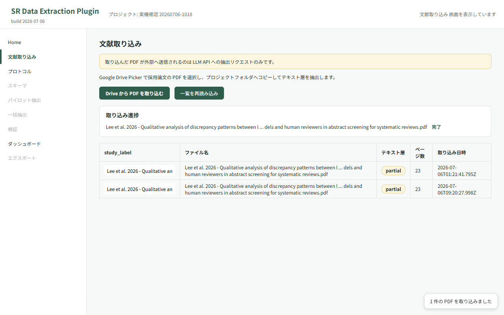
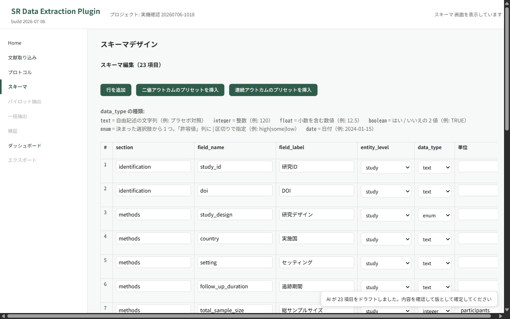
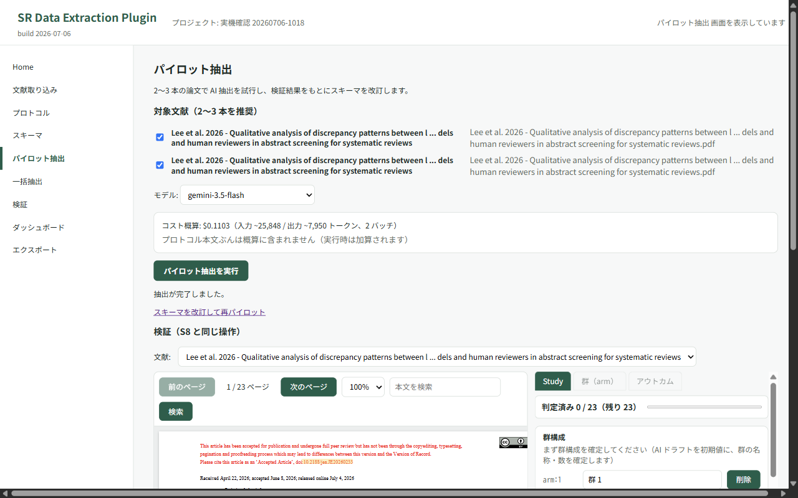
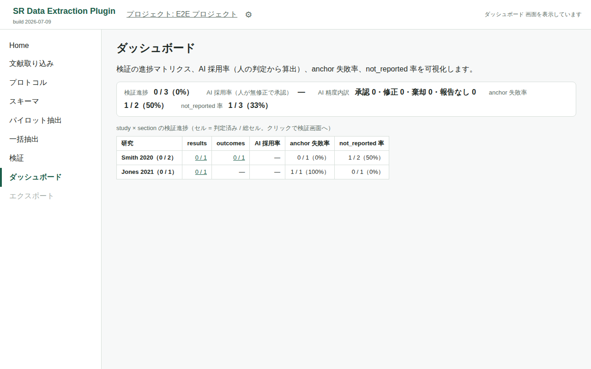

なにをするツールか What it does
- Google Drive 上の採用論文 PDF と研究プロトコルから、AI が抽出スキーマ（コーディングシート）をドラフトします。 AI drafts an extraction schema (coding sheet) from your protocol and the included PDFs stored in Google Drive.
- AI が各論文からスキーマに沿って値を抽出し、各値に根拠となる本文箇所（verbatim quote）を付けます。 AI extracts values from each paper along that schema and attaches a verbatim quote as evidence for every value.
- PDF.js ビューア上で根拠箇所をハイライト表示します。 Each quote is highlighted in the built-in PDF.js viewer.
- 研究者がハイライトを見ながら accept / edit / reject / not_reported で最終判定し、すべての判断が監査証跡として記録されます。 You make the final call with accept / edit / reject / not_reported, and every decision is recorded as an audit trail.
- 確定データを CSV（study_wide / results_long / audit）と R 用データセットとして書き出します。 Confirmed data is exported as CSV (study_wide / results_long / audit) and as an R-ready dataset.
画面イメージ Screenshots




画像はテスト用データで、実データは含みません。 The screenshots use test data only; no real study data is shown.
サーバーレス構成（BYOK） Serverless by design (BYOK)
開発者が運用するサーバーは存在しません。データは、利用者自身の Google Drive / Sheets と、利用者が自分の API キーで契約する LLM API の間でのみ流通します。 There is no developer-operated server. Your data flows only between your own Google Drive / Sheets and the LLM API you pay for with your own key.
保存先はあなたの Google アカウント Stored in your Google account
プロジェクト DB は Google Sheets、PDF・抽出テキスト・ログの実体は Google Drive に置かれます。 The project database is a Google Sheet; PDFs, extracted text and logs live in your Google Drive.
要求するスコープは 2 つだけ Only two OAuth scopes
「userinfo.email」と「drive.file」のみ。Drive 全体や全スプレッドシートを読む権限は要求しません。
Just userinfo.email and drive.file — never full Drive or all-spreadsheet
access.
BYOK の LLM API Bring your own LLM key
Gemini API・OpenRouter・Anthropic・Azure OpenAI・OpenAI 互換 API（ローカル LLM 含む）から選べます。キーはブラウザ内にのみ保存されます。 Choose Gemini, OpenRouter, Anthropic, Azure OpenAI or any OpenAI-compatible endpoint (including local LLMs). Keys never leave your browser.
MIT ライセンスの OSS MIT-licensed open source
ソースコードは GitHub で公開しています。開発は JSPS 科研費 25K13585 の助成を受けています。 The source is public on GitHub. This work was supported by JSPS KAKENHI Grant Number 25K13585.
はじめかた Getting started
- Chrome ウェブストアからインストールします。 Install from the Chrome Web Store.
- 拡張の設定画面で、ご自身の LLM API キーを保存します（BYOK）。 Save your own LLM API key in the extension options (BYOK).
- Google アカウントでログインし、プロジェクトを作成します。 Sign in with Google and create a project.
操作の詳細は使い方ガイドを参照してください。 See the user guide for the full walkthrough.